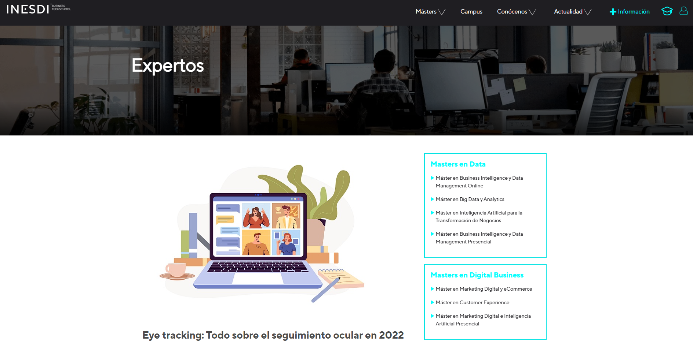
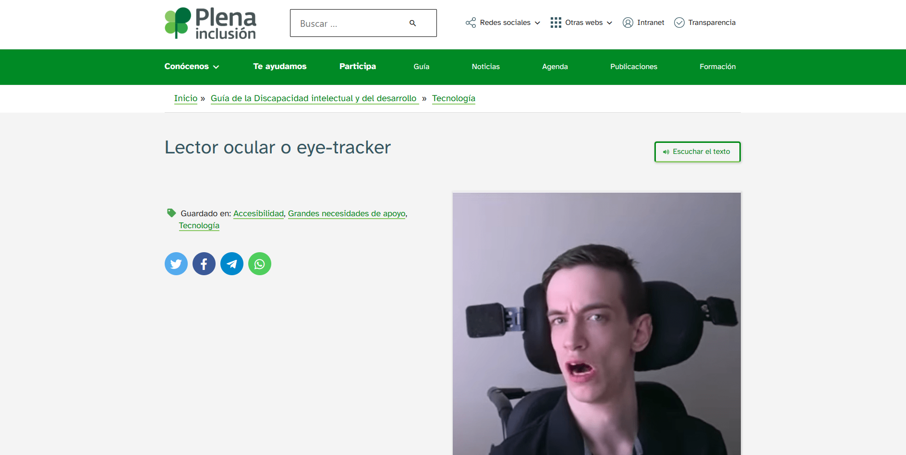
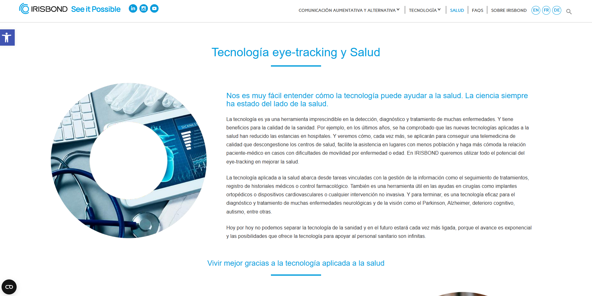
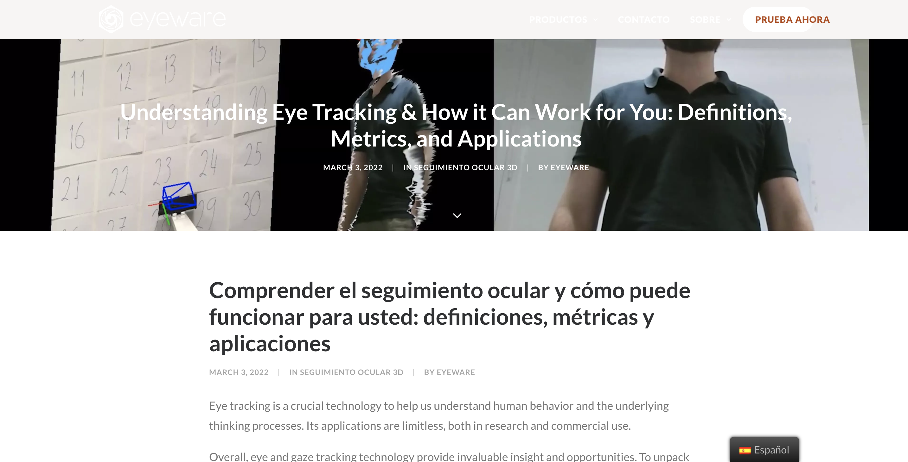

¿Qué es?
¿Qué es un eye tracker?
Un eye tracker es un dispositivo que mide los movimientos oculares de una persona. Esto se consigue mediante el uso de cámaras o sensores infrarrojos para el rastreo de la posición de los ojos en el espacio. Los datos obtenidos a partir de este dispositivo pueden utilizarse para una variedad de propósitos, incluyendo la investigación, el marketing, el diseño de productos y la medicina.
Definición científica
Un eye tracker es un dispositivo que mide los movimientos oculares de una persona. Estos movimientos oculares se pueden clasificar en dos tipos principales:
- Movimientos sacádicos: Estos son los movimientos rápidos de los ojos que se utilizan para cambiar la dirección de la mirada.
- Movimientos suaves: Estos son los movimientos lentos de los ojos que se utilizan para explorar un objeto o una escena.
Los eye trackers pueden recopilar una variedad de datos sobre los movimientos oculares, incluyendo:
- La posición de los ojos en el espacio: Esto indica dónde está mirando una persona.
- La duración de la fijación: Esto indica cuánto tiempo una persona mira un objeto.
- Los movimientos oculares sacádicos: Estos son los movimientos rápidos de los ojos que se utilizan para cambiar la dirección de la mirada.
- Los movimientos oculares suaves: Estos son los movimientos lentos de los ojos que se utilizan para explorar un objeto o una escena.
Tipos de eye tracker
Existen dos tipos principales de eye trackers:
- Eye trackers de seguimiento de pupilas: Estos eye trackers utilizan una cámara para rastrear el movimiento de la pupila. La pupila se dilata y contrae en respuesta a la luz, y los cambios en su tamaño se pueden utilizar para calcular la posición del ojo.
- Eye trackers de seguimiento de reflejos corneales: Estos eye trackers utilizan un emisor de luz infrarroja y un sensor para rastrear el movimiento del reflejo corneal. El reflejo corneal es una imagen distorsionada de la fuente de luz que se proyecta en la córnea del ojo. Los cambios en la posición del reflejo se pueden utilizar para calcular la posición del ojo.
¿Cómo funcionan los eye trackers?
El funcionamiento básico de un eye tracker es el siguiente:
- El eye tracker capta una imagen de la cara del sujeto
- El software del eye tracker identifica los ojos en la imagen
- El software calcula la posición de los ojos en la imagen
La precisión de los eye tracker depende del tipo de eye tracker utilizado y de las condiciones de iluminación. Los eye trackers de seguimiento de pupilas suelen ser más precisos que los eye trackers de seguimiento de reflejos corneales, pero pueden ser más sensibles a las condiciones de iluminación.
¿Porque lo he escogido?
¿Porque he escogido los eye trackers?
He escogido los eye trackers porque creo que son una tecnología muy poderosa que tiene el potencial de mejorar significativamente nuestra comprensión de la visión humana y la usabilidad de los productos.
Los eye trackers permiten recopilar datos detallados sobre cómo las personas miran y procesan la información visual. Estos datos ayudan a entender cómo las personas interactúan con los productos y servicios diseñados por empresas.
En especial, me interesan los eye trackers para usos como:
- Mejorar la usabilidad de los productos: los eye trackers pueden utilizarse para identificar los elementos de un producto que son difíciles de usar o que son confusos. Esta información puede utilizarse para mejorar la usabilidad de los elementos de un producto e interfaz del producto frente al público.
- Desarrollar nuevas interfaces de usuario: los eye trackers pueden utilizarse para optimizar el desarrollo de nuevas interfaces de usuarios, para que sean más intuitivas y fáciles de usar.
- Evaluar el impacto de la publicidad: los eye trackers pueden utilizarse para evaluar el impacto de la publicidad en la atención visual de las personas. Esta información puede utilizarse para mejorar la eficacia de las campañas publicitarias.
Esta información puede utilizarse para mejorar la usabilidad del procuto y conseguir que más fácil su uso para los usuarios.
Mejora la usabilidad de los productos
Los eye trackers pueden utlizarse para mejorar la usabilidad de los productos de diversas maneras:
- Identificar los elementos de un producto que son difíciles de encontrar o usar.
- Evaluar la eficacia de las instrucciones y las señalizaciones.
- Comprender cómo las personas interactúan con los productos en diferentes situaciones.
Esta información puede utilizarse para desarrollar nuevas interfaces de usuario que sean más eficaces y fáciles de usar.
Evaluación del impacto de la publicidad
Los eye trackers puede utilizarse para evaluar el impacto de la publicidad en la atención visual de las personas:
- Medir el tiempo que las personas pasan mirando un anuncio.
- Identificar los elementos de un anuncio que atraen la mayor atención visual.
- Comprender cómo las personas responden a diferentes tipos de publicidad.
Esta información puede utilizarse para optimizar la eficacia de las campañas publicitarias.
Historia
Historia del eye tracker
Los primeros eye trackers se desarrollan en la década de 1950. Estas primeras versiones eran muy grandes y caras, y solo se utilizaban en entornos de investigación.
En las décadas de 1960 y 1970, los eye trackers se transformaron en un dispositivo más pequeño y asequible, lo que permitió que se utilizaran en una variedad de campos, incluyendo la medicina, la psicología y la investigación del mercado.
En la década de 1980, los eye trackers comenzaron a implementarse en el diseño de productos. Los diseñadores se dieron cuenta de que los eye trackers podían utilizarse para comprender cómo las personas interactuaban con los productos, lo que podía ayudar a mejorar la usabilidad y accesibilidad de los productos.
En la década de 1990, los eye trackers se hicieron aún más pequeños y asequibles, lo que permitió que se utilizaran en una variedad de aplicaciones comerciales y de consumo.
En la década de 2000, los eye trackers se convirtieron en un herramienta estándar en una variedad de campos. Estos dispositivos se utilizan ahora en una amplia gama de aplicaciones, incluyendo:
- Investigación: los eye trackers se utilizan en la investigación para el estudio de la visión humana, la atención visual y el comportamiento humano.
- Diseño de productos: los eye trackers se utilizan en el diseño de productos para mejorar la usabilidad y la experiencia del usuario.
- Marketing: los eye trackers se utilizan en el marketing para evaluar el impacto de la publicidad y la usabilidad de los sitios web.
- Medicina: los eye trackers se utilizan en la medician para el diagnosis y tratamiento de trastornos visuales.
Desarrollo de los métodos de seguimiento ocular
El seguimiento de pupilas se desarrolló por primera vez en la década de 1950. El primer eye tracker de seguimiento de pupilas implementaba un cámara para rastear el movimiento de la pupila.
El seguimiento de reflejos corneales se desarrolló en la década de 1960. El primer eye tracker de seguimiento de reflejos corneales utilizó un emisor de luz infrarroja para proyectar un punto de luz en la córnea del ojo.
Ambos métodos de seguimiento ocular se han mejorado con el tiempo. Los eye trackers modernos son más precisos y fiables que los primeros modelos de este dispositivo.
Mercado
Mercado de los eye trackers
El mercado de los eye trackers está creciendo rápidamente. Se espera que el mercado alcance los 2.000 millones de dólares en 2025. Este creciemiento se debe a una serie de factores, incluyendo:
- El aumento de la popularidad de los eye trackers: los eye trackers se utilizan cada vez más en el ámbito de la investigación, diseño de productos, marketing y medicina.
- El desarrollo de nuevos tipos de eye trackers más pequeños, asequibles y fáciles de usar: los nuevos tipos de eye trackers están consiguiendo que esta tecnología sea más accesible para una gama más amplia de usuarios.
- El aumento de la inversión en investigación y desarrollo: las empresas están invirtiendo cada vez más en investigación y desarrollo de nuevos aplicaciones para los eye trackers.
Segmentación del mercado
El mercado de los eye trackers se puede segmentar por tipo de producto, aplicación y usuario final.
Por tipo de producto:
- Eye trackers de seguimiento de pupilas: estos eye trackers utilizan una cámara para rastrear el movimiento de la pupila.
- Eye trackers de seguimiento de reflejos oculares: estos eye trackers utilizan un emisor de luz infrarroja para proyectar un punto de luz en la córnea del ojo.
Por aplicación:
- Investigación: los eye trackers se utilizan en la investigación para el estudio de la visión humana, la atención visual y el comportamiento humano.
- Diseño de productos: los eye trackers se utilizan en el diseño de productos para mejorar la accesibilidad y experiencia del usuario.
- Marketing: los eye trackers se utilizan en el campo del marketing para evaluar el impacto de la publicidad y la usabilidad de los sitios web.
- Medicina: los eye trackers se utilizan en la medicina para la diagnosis y tratamiento de trastornos visuales.
Por usuario final:
- Empresas: las empresas utilizan los eye trackers para mejorar la investigación, el diseño de productos, el marketing y la medicina.
- Instituciones académicas: las instituciones académicas utilizan los eye trackers para realizar investigaciones sobre la visión humana y el comportamiento humano.
- Gobierno: el gobierno utiliza los eye trackers para el estudio del comportamiento humano y para el desarrollo de aplicaciones de seguridad.
Perspectivas de creciemiento
Se espera que el mercado de estos dispositivos siga creciendo exponencialmente durante los próximos años. Los factores que impulsan este creciemiento son:
- El aumento de la popularidad de los eye trackers en una variedad de campos: los eye trackers se utilizan cada vez más en campos como la investigación, el diseño de productos, el marketing o la medicina.
- El desarrollo de nuevos tipos de eye trackers más pequeños, asequibles y fáciles de usar: los nuevos tipos de eye trackers están haciendo que esta tecnología se cada vez más accesible para una gama más amplia de usuarios.
- El aumento de la inversión en investigación y desarrollo: las empresas están invirtiendo cada vez más en la investigación y el desarrollo de nuevos aplicaciones para estos dispositivos.
En particular, se espera que el crecimiento del mercado de los eye trackers en el campo del diseño de productos sea significativo. Los eye trackers se utilizan cada vez más para mejorar la usabilidad de los productos y las interfaces de usuario. Los fabricantes de productos están utilizando los eye trackers para identificar los elementos de un producto que son difíciles de usar o que son confusos. Esta información puede utilizarse para mejorar el diseño del producto y hacer que sea más fácil de usar para las personas.
Más información acerca del eye tracker
Eye tracking: qué es, qué tipos hay y para qué sirve
Eye tracking: Todo sobre el seguimiento ocular en 2022 | INESDI
Lector ocular o eye-tracker (Plena Inclusión)
Tecnología eye-tracking y Salud
Comprender el seguimiento ocular y cómo puede funcionar para usted: definiciones, métricas y aplicaciones